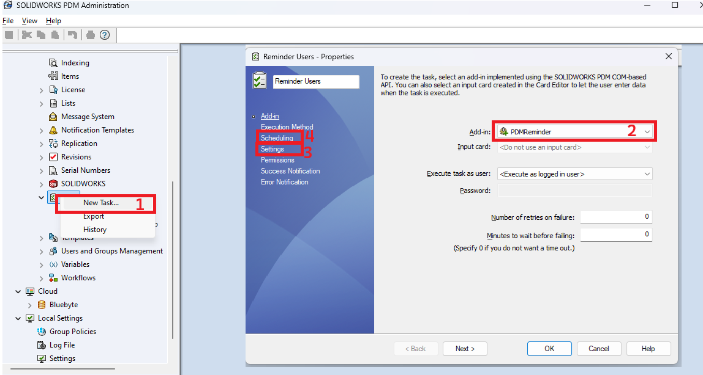
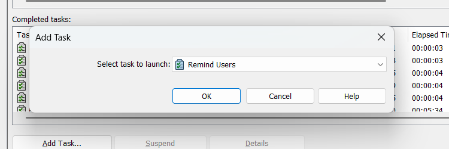
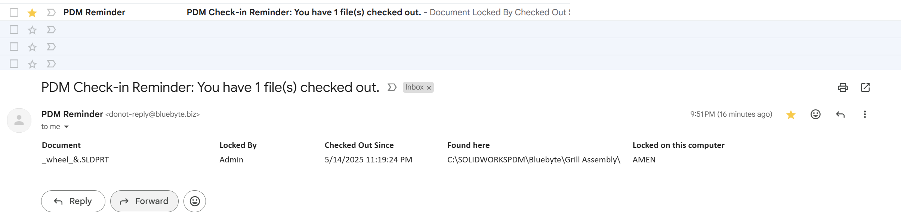
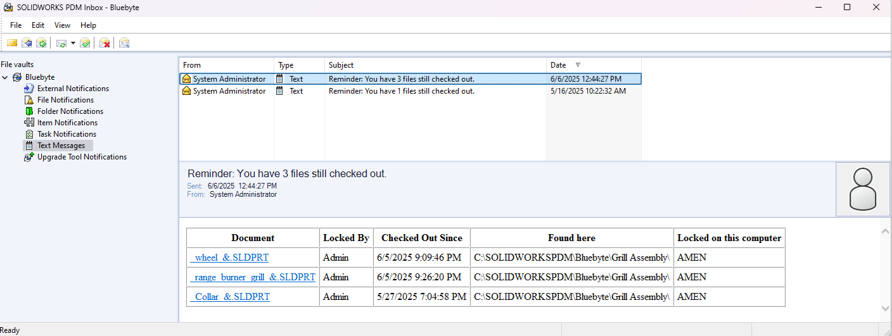
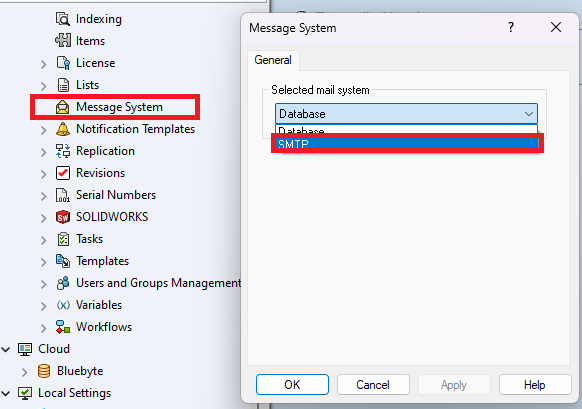

Step-by-Step Instructions
Right-click "Tasks" in the PDM Administration tool
Go to your vault (e.g.,bluebyte) and right-click the Tasks node. Select New Task....Choose the Add-in
In the Add-in dropdown, select PDMReminder. This add-in must already be imported into the vault.Go to the Settings tab

The Settings tab allows you to define the condition that triggers the reminder:
- "Remind users who have files checked out longer than..." a specified number of days. This is the core rule that determines which users will receive a reminder—based on how long their files have remained checked out in the vault. For example, entering
3days will only include users with files checked out for more than 3 days.
- "Remind users who have files checked out longer than..." a specified number of days. This is the core rule that determines which users will receive a reminder—based on how long their files have remained checked out in the vault. For example, entering
Configure the Scheduling tab: Set how often the task runs (e.g., daily at 7:00 AM). This ensures users get regular notifications and helps enforce good vault hygiene.
Configure the exection method and permissions tab.
If you have scheduled a task, it will run according to the interval and frequency set.
Optional: You can trigger the task to run immediately, clicking on Add Task... 
Results
- If you use the Emailing Service, PDM users will receive an email similar this the following: 
- If you do not use the Emailing Service, PDM users will receive notifications in their PDM inbox:

Note
If you are using SOLIDWORKS PDM Professional 2024 or newer, you can configure PDM to use your own SMTP server instead: 
Considerations for Using the Email Service
Before enabling the Emailing Service, keep the following points in mind:
Additional Fees:
The Emailing Service may incur additional fees depending on your subscription plan. Ensure you review the pricing details before enabling this feature.Email Delivery Issues:
Emails sent through the service are sent from outside your organization's domain. This could result in emails being flagged as spam or blocked by your organization's email filters. To mitigate this, consider whitelisting the sender's domain or consulting with your IT department.
By understanding these considerations, you can make an informed decision about whether to enable the Emailing Service for your PDMReminder tasks.